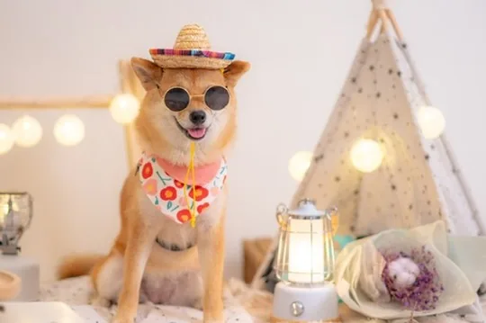
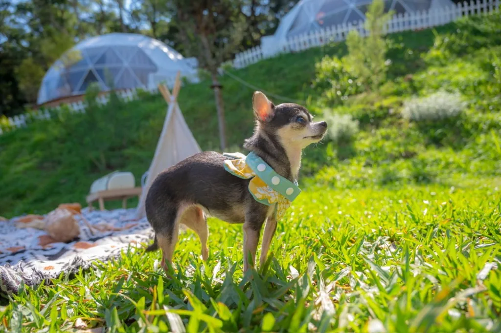
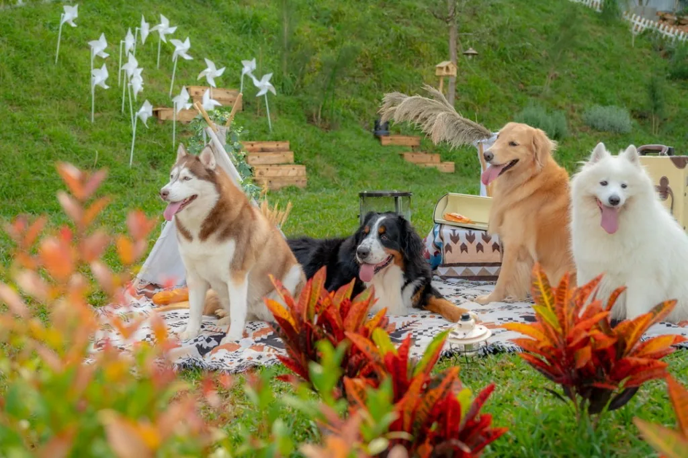

📷 Shot by professional photographer
Teacher Xiaoba has 15 years of full-time photography experience and is good at dynamic guidance, natural interaction and family portraits.
Limited collaboration project | Joyforest Camping Area × Photographer Minibus Teacher
Pet photography discount starts from NT$3,800｜After the photo shoot, you can have dinner, barbecue, sing, or stay overnight
The Haosen Camping Area cooperated with the photographer Mr. Xiaoba to turn about 200 square meters of forest grassland, dome tents, outdoor scenes and indoor studio shooting spaces into a large-scale pet photography scene that is rare in Taiwan. The furry kid can first take photos in the studio and outdoors on the grass. There is no need to leave in a hurry after the photoshoot. You can also have a dinner party, barbecue, sing, or arrange an overnight stay, turning it into a complete furry kid's forest trip.
Teacher Xiaoba has 15 years of full-time photography experience and is good at dynamic guidance, natural interaction and family portraits.
It can be used to take studio shots with a clean background, as well as outdoor photos of grasslands, tents, and forests.
Grasslands, tents, outdoor kitchens and forest environments can all become part of your furry child photos.
After the shooting, you can have lunch, dinner, barbecue, and singing. If you want to take your time and have fun, you can also directly arrange accommodation for the night.
This is not a pet photo studio where you leave after taking the photo, but a private forest space where you can arrange "photography + dinner + accommodation" together.
The Laohaosen camping area provides about 200 square meters of forest grassland, dome tents, outdoor scenes and private spaces for resting; the photographer minibus teacher is responsible for professional pet photography guidance and shooting. you cansame dayComplete indoor studio textured photos and outdoor photos of grass and forests with natural light, and you can also arrange the photoshoot as a furry kid's trip with "after-shooting and then-party".
If you are looking forTaoyuan Pet Photography、pet friendly venue, can be reservedfurry birthday partyorgrass pet photography, here the venue and photography are integrated at once, and the main focus is always: the forest charter experience of Lao Haosen, coupled with the professional pet photography of Teacher Minibus.

Mr. Xiaoba is a photographer of Bawei Creative Co., Ltd. He has more than 15 years of full-time photography experience and has long-term shooting of commercial photography, parent-child portraits, travel photography, weddings, aerial photography and event records.
Past partners include Sheraton, ASUS, Bafang Yunji, Yao Yuanhao and other brands and commercial projects. He is also one of the few photographers in Taiwan who has been involved in overseas parent-child travel photography for a long time. He has taken parent-child and family portraits in Japan, South Korea, Singapore, Cebu, Bali, Sydney and other places, and has accumulated more than 50 overseas travel photography experience.
What Mr. Xiaoba is good at is not standard posing, but dynamic guidance, shooting while playing, and capturing natural interactions. This kind of shooting method is very suitable for furry children, because the pets may not always look at the camera, but they will run, act coquettishly, get close to their owners, be attracted by snacks, and interact with family members.
What we take is not just “a picture of a pet sitting”, but a picture of real affection between the furry child and his family.
The indoor studio shots are clean and delicate, while the outdoor scenes are naturally warm. Both styles can be completed in the same venue without moving separately.

Professional lighting and background paper can be set up in the studio tent to take clean, bright pet photos with a simple background. This style is suitable for guests who like a studio feel, Korean simple style, birthday commemorations, and photos of the furry baby alone and the owner.
Suitable for shooting:

The forest itself is a forest-type grassland venue. There are grasslands, tents, outdoor spaces and natural light outdoors. Furry children can move around in a real environment and take photos that have a more sense of life, travel and natural interaction.
Suitable for shooting:
The following are the pet photography works of Mr. Minibus. You can see different styles such as clean studio shots, outdoor grass, real scenes in the forest and interactions with their owners. Click on the image to enlarge the view and support left and right keyboard switching and ESC closing.
Lahaosen provides about 200 square meters of forest grassland and tent space, which can be used for pet photography and private parties. Instead of just a small corner for you to take photos, the entire venue can become part of the photo.

Venue includes:
The following is the preferential price format (original price underlined). Actual reservations will be coordinated based on date, number of people, furry status, and venue usage time.
NT$5,800 Starting from NT$3,800
The 40-minute shooting will be arranged according to the condition of the furry baby, including studio shots, owner photos and outdoor scenes. The actual shooting content will be adjusted based on the furry child's personality, cooperation, weather and conditions of the day. Furry babies don’t need to be very good at looking at the camera. As long as they are willing to interact with their owners, they can take natural and warm photos.
Refinements are not included in the base plan.
After taking pet photography, you can purchase lawn gatherings, medium-sized private venues or accommodation according to your needs. The furry kids can continue to move around on the grass, and the adults can eat, barbecue, chat, and sing without leaving immediately after taking pictures.
NT$6,800 Starting from NT$4,800 / 4 hours
Suitable for small pet parties, furry children's birthdays, and family gatherings of 2-8 people.
In principle, one main tent will be open for small gatherings; if two tents are required, a medium-sized tent can be reserved or discussed separately.
NT$9,800 Starting from NT$6,800 / 4 hours
Suitable for 9-20 people pet parties, furry child birthday parties, dog lovers gatherings.
When there are a large number of people, the price will be adjusted based on cleaning, equipment usage, number of furry children and activity content.
Accommodation room types are quoted based on date and availability.
Suitable for guests who want to turn pet photography into a furry trip.
NT$10,800 Starting from NT$7,800
recommend:The most suitable combination for your first appointment. After the photo shoot, you can stay to eat, chat, and play with your furry child.
NT$12,800 Starting from NT$9,800
If you want a photographer to completely record the event process, group photos, furry child’s birthday ceremony or party interactions, you can purchase additional photography services based on the shooting time.
Pet photography and private parties require reservations based on the opening hours of the venue. Please refer to the following three arrangement methods A / B / C.
| time period | content | Suitable |
|---|---|---|
| Period A | Morning shooting + lunch party | Simple photography, lunch party, furry child’s birthday lunch |
| Period B | Afternoon shooting + dinner party | Photography + dinner, barbecue, singing, dog gathering |
| C period | Afternoon shooting + dinner party + accommodation | Birthday trips for furry kids, small trips for family pets, and guests who want to play slowly |
The actual time will be confirmed based on the reservation status on the day; if you only want to take pictures, you can also reserve only the photography time slot.
| date | Available time slots |
|---|---|
| on Monday | A / B / C |
| Tuesday | A / B / C |
| Wednesday | A / B / C |
| Thursday | A / B / C |
| Friday | A / B / C |
| Saturday | A |
| Sunday | B / C |
A / B / C can be discussed on weekdays; only A time slot is open on Saturdays; B / C time slots are open on Sundays.
| Consecutive holidays | Available time slots |
|---|---|
| The first day of consecutive vacation | A |
| Intermediate dates for consecutive holidays | Usually not open for simple activities |
| Last day of holiday | B / C |
If it is the "Pet Photography + Accommodation" plan, additional arrangements can be discussed based on the accommodation date.
A is a morning shoot + lunch party; B is an afternoon shoot + dinner party; C is an afternoon shoot + dinner party + accommodation. A/B/C can be discussed on weekdays, only A is open on Saturdays, and B/C is open on Sundays. Even on holidays, A/C on the first day and B/C on the last day are the main ones.
Can. You can single-select the basic pet photography plan. Availability of reservations will be confirmed based on the opening hours of the day.
no. This is a complete pet photography plan co-operated by Lahaosen Camping Area and photographer Xiaoba. It includes photography services, use in designated scenes, and additional parties or accommodation can be purchased according to the plan.
The basic plan starts from NT$3,800, including 2 pets and 2 owners, and 40 minutes of shooting.
Can. The 3rd pet starts from NT$800/pet, and the 3rd person in the photo starts from NT$800/person. When shooting additional pets or the number of people in the shot, the shooting time will be extended based on the actual combination. Usually, each additional pet or animal will add about 5-10 minutes.
There is no charge for those who simply accompany you and do not appear in the photo. However, if you want to take a group photo, a family photo or an interactive photo, it will be calculated based on the number of people in the photo.
All photos taken successfully will be given, and at least 20 color-corrected photos will be delivered. Photos are delivered in the cloud.
The basic plan includes basic color correction and does not include refinement. Additional photos can be purchased, starting from NT$800/photo.
Can. The studio tent can be arranged with background paper and lighting to take pet photos with clean and simple backgrounds.
Can. There are outdoor spaces such as grassland, tents, and forests in Jiahao Forest, where you can take photos of natural scenes.
Can. You can purchase a venue-only small party or a medium-sized private party plan, using the lawn, indoor air-conditioned seating area, TV, karaoke, or you can prepare your own meals, barbecue or simple cooking.
No. Lahaosen does not provide meals and ingredients. It is recommended to prepare them by yourself or buy them at nearby stores first.
Can. You can reserve a hot air balloon room or cloud room based on the date and availability, and purchase pet photography.
The shooting location was the Joyforest camping area in Taoyuan, which is located in the bayberry forest area. The official address and transportation method will be provided after completing the appointment.
Please use LINE or WhatsApp to tell us your desired date, number of people, number of fur babies, whether you want to take studio or outdoor photos, and whether you want to purchase additional party or accommodation. We will help confirm photographer and venue dates.
If you want to know more about accommodation room types, transportation or forestry department graduation photo cooperation, you can also continue browsing from the following links.
If you are looking for Taoyuan pet photography, pet-friendly private venues, furry child birthday parties, or pet photography experiences where you can stay and play after taking photos, the Hao Hao Sen Camping Area × Minibus Teacher will be perfect for you. You are welcome to tell us the date, number of people and number of fur babies first, and we will help suggest the most suitable plan.
#Joyforest #TaoyuanTaiwan #ForestPhotography #PrivateForestVenue #GraduationPhotography #FamilyPhotography #PetPhotography #OutdoorPortraits #GlampingTaiwan #Yangmei